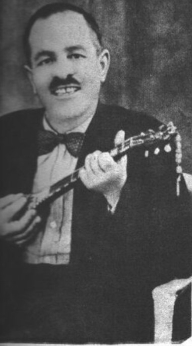

Ο Μάγκας του Πειραιά και ο Πολυτάραγος Πρωτοπόρος (1889 – 1954)

Ο Γιώργος Μπάτης (κατά κόσμον Γιώργος Τσώμος) γεννήθηκε στα Μέγαρα το 1889 αλλά έδρασε κυρίως στον Πειραιά. Υπήρξε μια από τις πιο εκκεντρικές, πολύχρωμες και αγαπητές φυσιογνωμίες της ρεμπέτικης ιστορίας. Ήταν αυτός που άνοιξε το ιστορικό καφενείο-τεκέ «Σωτήρας» στη Δραπετσώνα, το οποίο λειτούργησε ως το απόλυτο ορμητήριο και σημείο συνάντησης της περίφημης «Τετράδος του Πειραιώς». Ο Μπάτης έπαιζε μπαγλαμά και κιθάρα, ενώ διέθετε μοναδικό ταλέντο στην αυτοσχεδιαστική σάτιρα.
Ο Μπάτης ξεχώριζε αμέσως από την εμφάνισή του: φορούσε πάντα καπέλο, προσεγμένο κοστούμι, είχε χαρακτηριστικό μουστάκι και κουβαλούσε έναν αέρα ασυμβίβαστης μαγκιάς συνδυασμένο με σαρδόνιο χιούμορ. Τα τραγούδια του δεν ήταν απλώς μελαγχολικά· συχνά σατίριζαν την καθημερινότητα, τους νόμους της εποχής και τα στερεότυπα της κοινωνίας με μοναδική ειλικρίνεια και σπιρτάδα. Πέθανε το 1954, αφήνοντας πίσω του τον μύθο ενός αντισυμβατικού καλλιτέχνη.
«Εγώ είμαι ο Μπάτης ο τρελός, που δεν λογαριάζω ούτε βασιλείς ούτε τζακιές, παρά μόνο την αλήθεια του ντουνιά.»